This project is a small farmer’s inventory of sheep. Each sheep has an id, name, breed, and sex. The tests were written with pytest and FastAPI’s TestClient, and the routes were filled in so those tests would pass. The flock is stored in a Python dictionary, not a SQL database, which is what the lab uses so the work stays on the tests and the endpoints.
The new sheep is Marigold, the Suffolk ewe from the handout. The lab note says to send the body with json=sheep_data_name, so the dictionary uses that name. The test posts to /sheep/, expects status 201, checks that the JSON body matches what was sent, and then reads the same id back to prove the record was stored.
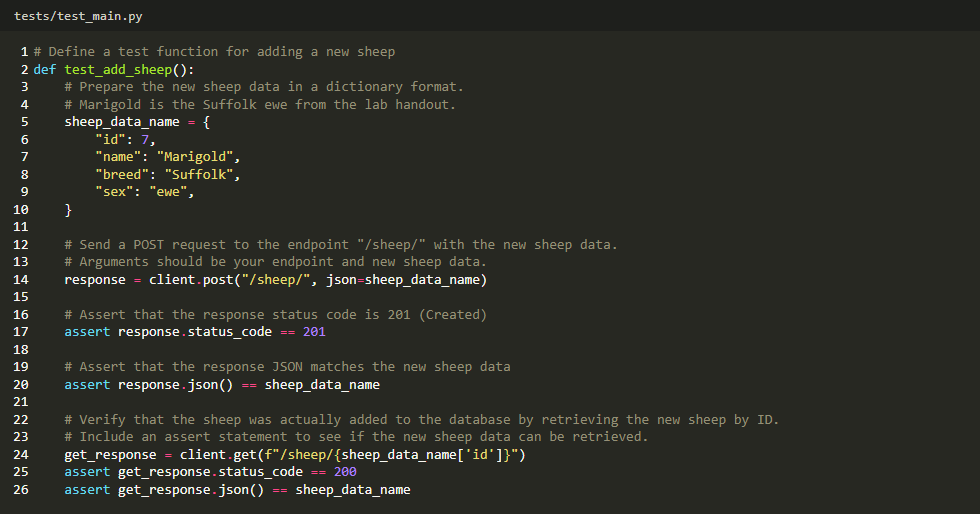
Following the lab, this test was run before POST /sheep/ was added. Reading Spice still passed, because that route was already in place. Adding Marigold failed: the server answered 404, and the test expected 201.
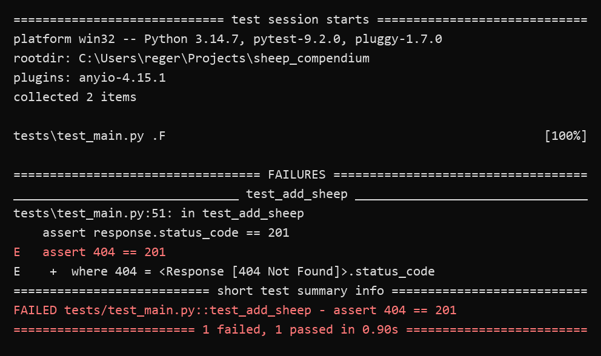
models/models.py defines a Pydantic Sheep model with id, name, breed, and sex. models/db.py keeps those records in FakeDB.data. add_sheep refuses a duplicate id by raising ValueError. The route in main.py does the same check and returns HTTP 400 instead, then stores the sheep and responds with 201. That is the status the test asserts.
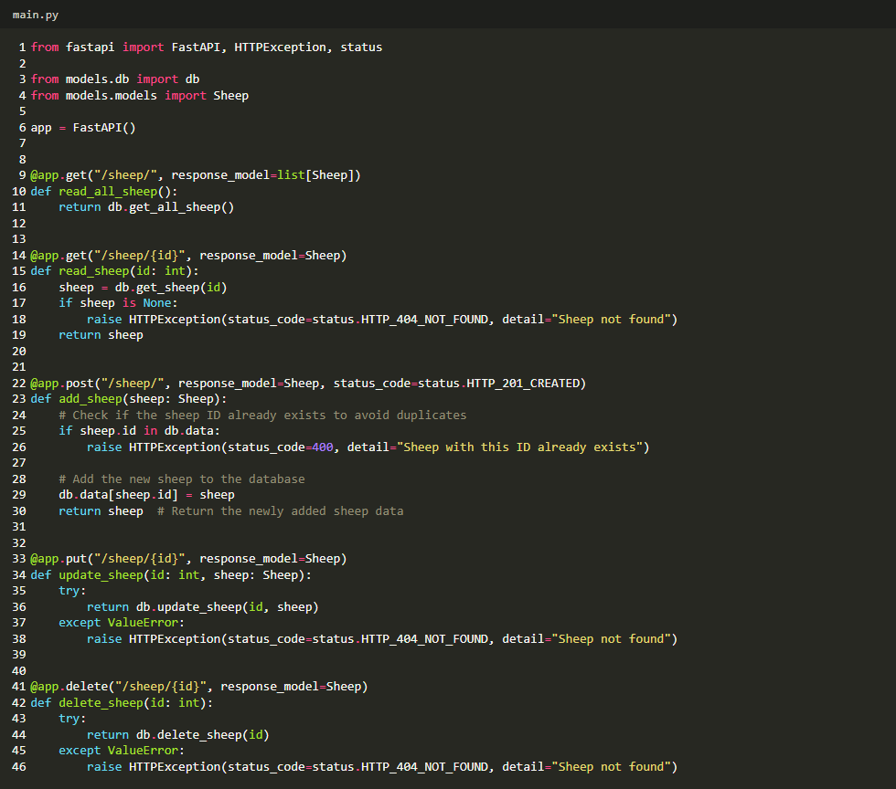
With the route in place, the same two tests pass.
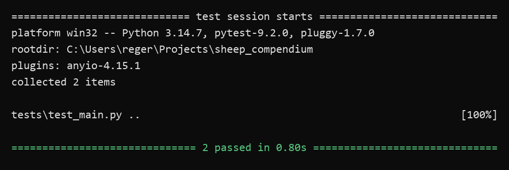
The app was started with uvicorn main:app. Port 8000 was already taken by another local project, so this server used http://127.0.0.1:8001/docs. The screenshots below are from that page’s Try it out panel.
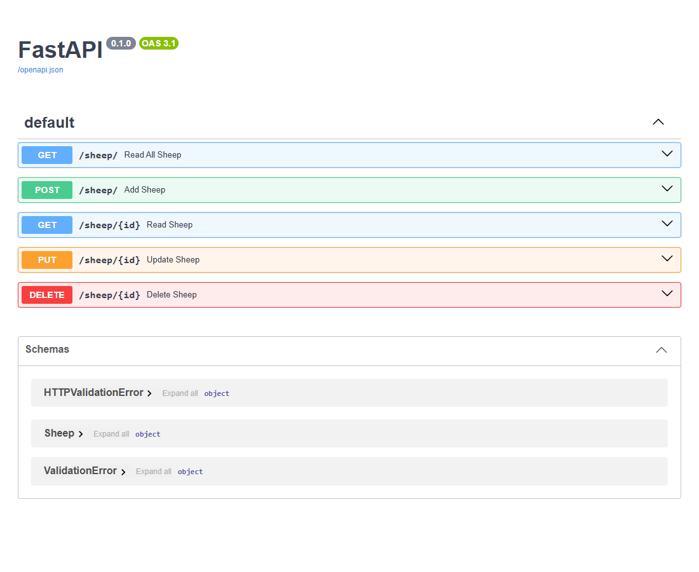
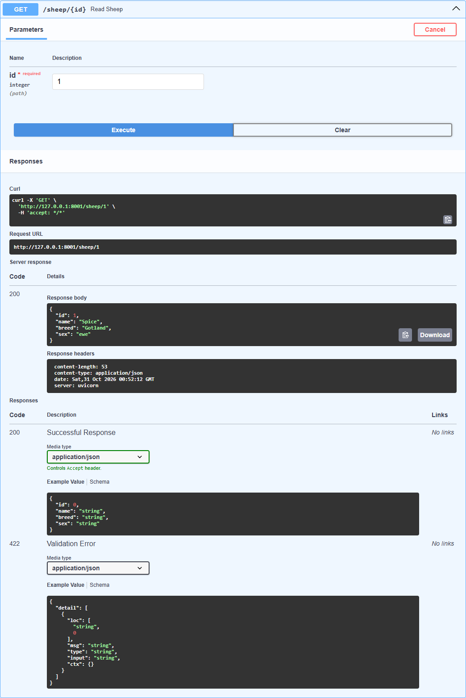
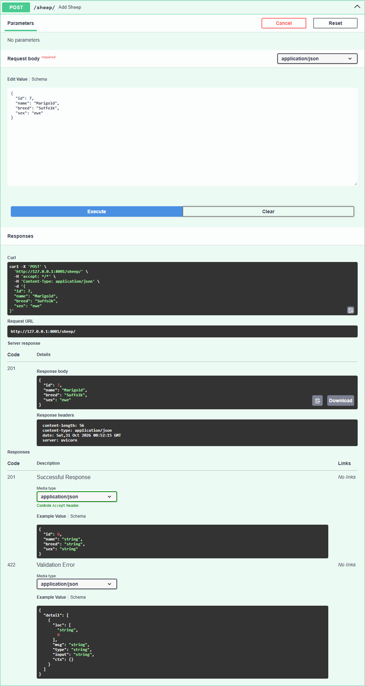
update_sheep takes the id and the new Sheep record separately. add_sheep only takes a Sheep and uses sheep.id as the key. A missing id becomes a 404. Delete removes the record and returns it. List returns every value in the dictionary.
The test asks for GET /sheep/, checks that the body is a list, and checks that the original six ids are present, including Spice’s record. It does not require an exact length, so it still passes after another test has added a sheep.
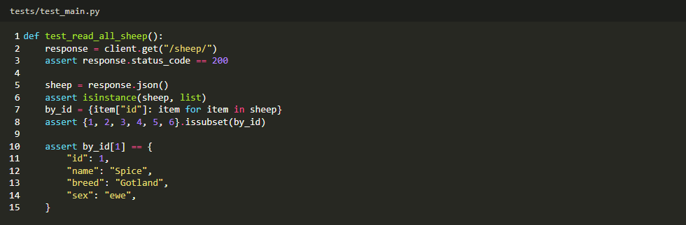
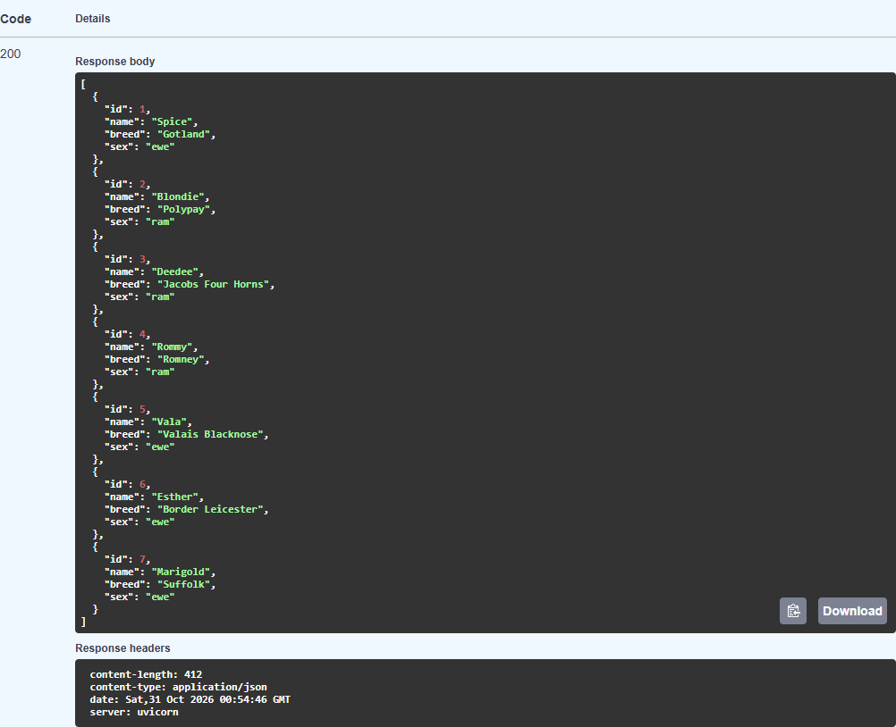
Blondie’s seeded record is a ram. The test changes that sex to ewe and reads the id again to confirm the write. In Swagger, the same route was used on Rommy, changing the seeded ewe record to a ram.
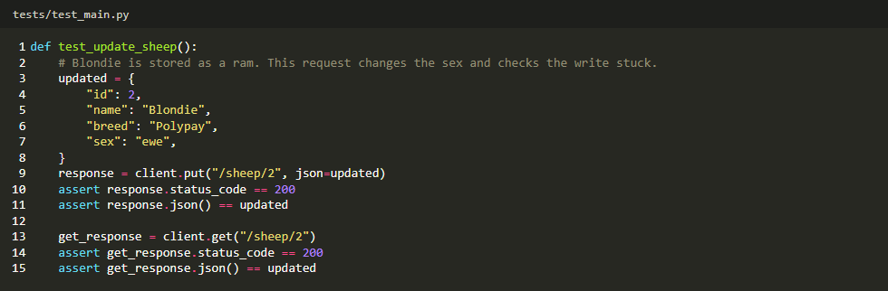
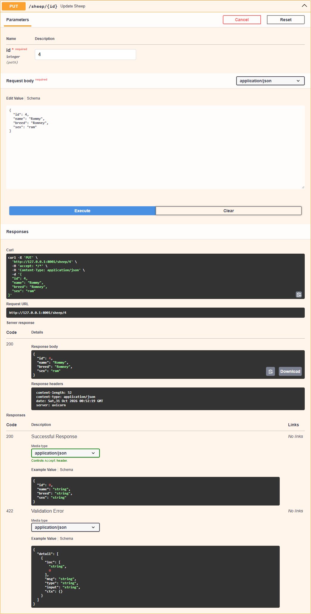
Button is the Babydoll from the handout. The test creates him, deletes him, and checks that a later GET returns 404. The read route returns 404 when get_sheep finds nothing, which is what makes that last assert possible. Swagger shows the same delete for Marigold.
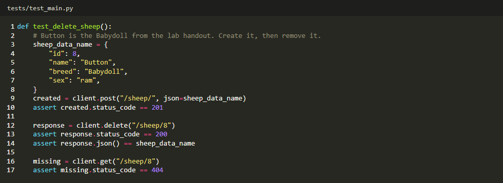
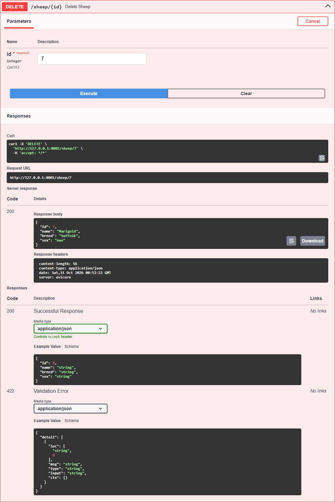
The extra tests cover a duplicate add (400), a missing update (404), and a missing delete (404), along with the three new routes. All eight tests pass.
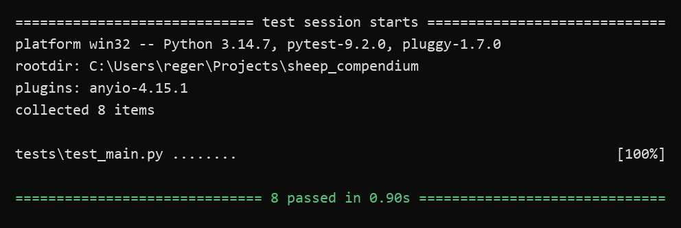
From the project folder:
python -m venv .venv
.venv\Scripts\python -m pip install -r requirements.txt
.venv\Scripts\python -m pytest
.venv\Scripts\python -m uvicorn main:app --reload
Then open http://127.0.0.1:8000/docs.